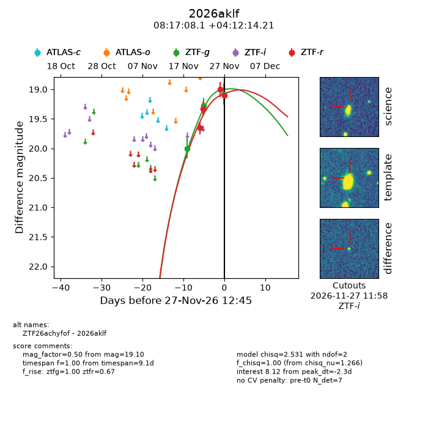
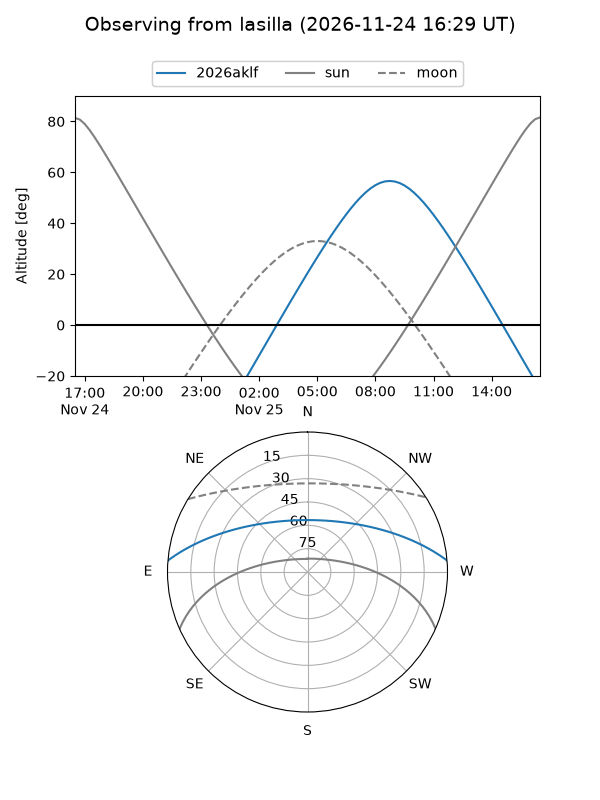
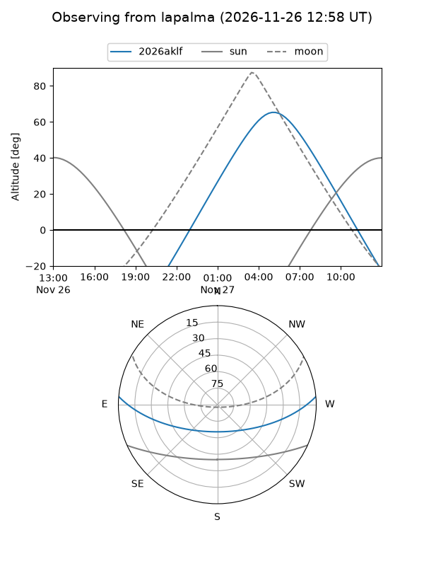
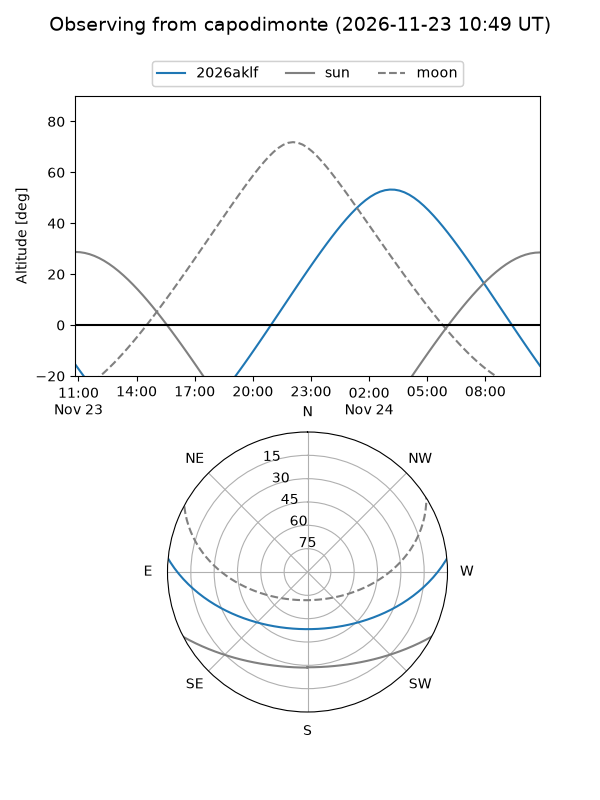
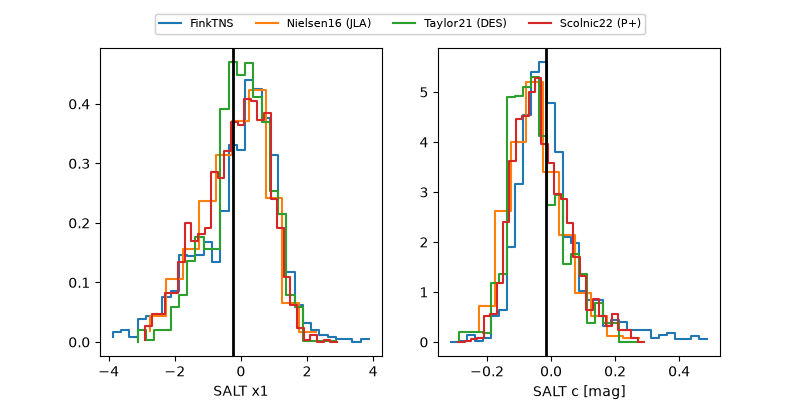

2026aklf
Target 2026aklf at 2026-11-27 12:46
Aliases and brokers:
FINK-ZTF: ztf.fink-portal.org/ZTF26achyfof
Lasair-ZTF: lasair-ztf.lsst.ac.uk/objects/ZTF26achyfof
ALeRCE-ZTF: alerce.online/object/ZTF26achyfof
YSE-PZ: ziggy.ucolick.org/yse/transient_detail/2026aklf
TNS name: wis-tns.org/object/2026aklf
Direct TNS query: direct search
alt names
ZTF26achyfof (ztf,fink_ztf)
2026aklf (tns,yse)
Coordinates:
equatorial (ra, dec) = 124.2837,+4.20395
equatorial (HMS+DMS) = 08:17:08.09,+04:12:14.21
galactic (l, b) = (219.1326,+20.95523)
Flags:
peak dt: -2.3
Photometry:
last ztfg=19.08, ztfr=19.10
3 ztfg, 4 ztfr detections
Lightcurve

Visibility



Additional plots
